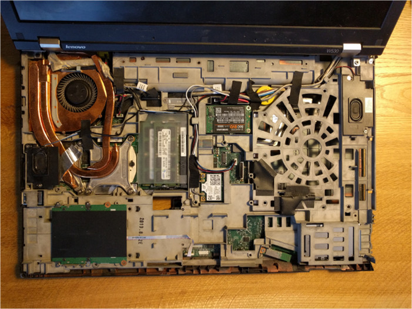
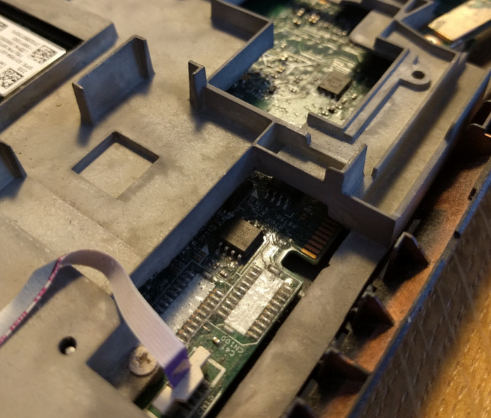

Lenovo W530 / T530
Flashing instructions
You have to remove the keyboard and the palm rest to access one of the flash ICs. The second flash ICs is behind the case frame, but can be flashed by using a simple trick. Connect every pin of the first flash IC, but tie /CS to Vcc. Connect /CS of the second flash IC to the programmer. As all lines except /CS are shared between the flash ICs you can access both with an external programmer.
For more details have a look at T430 / T530 / X230 / T430s / W530 common and the general flashing tutorial.
After removing the keyboard and palm rest

Closeup view of the flash ICs
